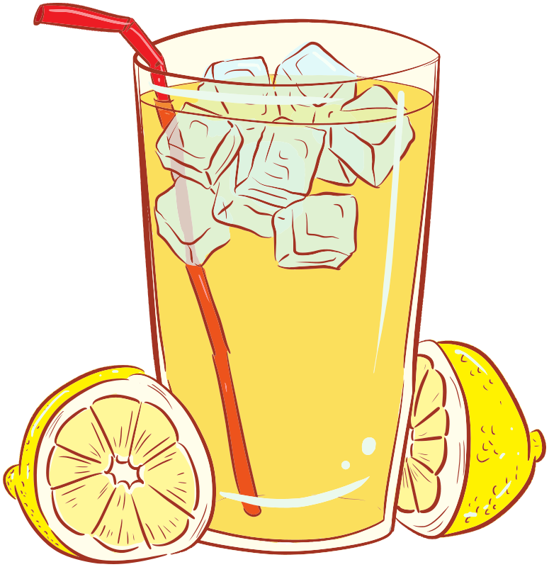

Problem of the Week
Problem D and Solution
The Perfect Mix
Problem
The proprietor of a lemon drink stand is trying to create the perfect summer lemon drink by combining two drinks that have already been prepared. The first lemon drink consists of a mixture of water and pure lemon juice in the ratio \(2:1\), by volume. The second lemon drink, with twice the volume of the first lemon drink, is filled with a mixture of water and pure lemon juice in the ratio \(3:1\), by volume. The contents of the two drinks are combined together into a third drink. This combination produces the perfect mix.
Determine the ratio of water to pure lemon juice, by volume, in the perfect mix.

Solution
Solution 1
Let \(V\) represent the volume of the first drink. Then \(2V\) represents the volume of the second drink.
Since the ratio of water to pure lemon juice, by volume, in the first drink is \(2:1\) then \(\frac{2}{3}\) of the volume of the first drink is water. That is, the volume of water in the first drink is \(\frac{2}{3}V\) and the volume of pure lemon juice in the first drink is \(\frac{1}{3}V\).
Since the ratio of water to pure lemon juice, by volume, in the second drink is \(3:1\) then \(\frac{3}{4}\) of the volume of the second drink is water. That is, the volume of water in the second drink is \(\frac{3}{4}(2V)=\frac{3}{2}V\) and the volume of pure lemon juice in the second drink is \(\frac{1}{4}(2V)=\frac{1}{2}V\).
When the contents of the two drinks are combined to produce the third drink, the volume of water is \(\frac{2}{3}V+\frac{3}{2}V=\frac{4}{6}V+\frac{9}{6}V=\frac{13}{6}V\) and the volume of pure lemon juice is \(\frac{1}{3}V+\frac{1}{2}V=\frac{2}{6}V+\frac{3}{6}V=\frac{5}{6}V\).
The ratio of water to pure lemon juice, by volume, in the perfect mix is \(\frac{13}{6}V:\frac{5}{6}V=13:5\).
Solution 2
Let \(\frac{1}{6}\) of the contents of the first drink be a unit of volume. Since the ratio of water to pure lemon juice, by volume, in the first drink is \(2:1\), then 4 units of volume are water and 2 units of volume are pure lemon juice, a total of 6 units of volume in the first drink.
Since the second drink has twice the volume of the first drink, the second drink has 12 units of volume. The ratio of water to pure lemon juice, by volume, in the second drink is \(3:1\) so 9 units of volume are water and 3 units of volume are pure lemon juice.
When the two drinks are combined there is a total of \(6+12=18\) units of volume, \(4+9=13\) of which are water and \(2+3=5\) of which are pure lemon juice.
Therefore, the ratio of water to pure lemon juice, by volume, in the perfect mix is \(13:5\).